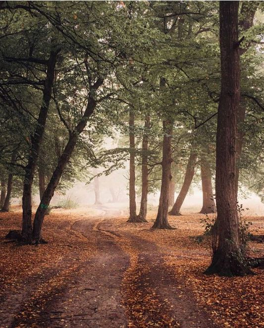

De multe ori când povestim despre Cluj, fie că suntem de-ai locului, fie că l-am vizitat de câteva ori, începem întotdeauna cu o descriere detaliată a centrului – străzile specifice din Transilvania, biserica impunătoare din mijlocul orașului, nu ratăm să spunem nici despre mulțimea și diversitatea restaurantelor, că doar avem de unde alege, apoi mergem într-o plimbare scurtă prin Parcul Central și facem o pauză luuungă, de parcă lista s-a terminat acolo. Ce-i drept, centrul orașului este atracția principală a orașului, atât pentru localnici, cât și pentru turiști, însă noi vrem să-ți arătăm și alte opțiuni de care te poți bucura, mai aproape de zona în care locuiești.
În această serie de articole ne propunem să vizităm cartierele importante ale Clujului și să le descoperim mai mult. Un fel de Treasure Hunt am îndrăzni să îi spunem. Facem astfel o listă de recomandări cu diverse, de la locuri unde poți face activități sportive sau poți găsi o zonă perfectă pentru un moment de relaxare, până la localuri și parcuri unde să ieși cu prietenii.
Înainte de a face o scurtă escapadă prin cartierul Grigorescu, poate că ți-ar plăcea să afli un pic din istoria locului. Ei bine, în trecut, cartierul se numea Donath, după numele ciobanului care a salvat orașul din mâinile turcilor. Legenda spune că, odată ce și-a dat seama de pericolul care amenința orașul, ciobanul Donath a alergat în tot orașul să-i strângă pe clujeni și împreună să reușească să-i alunge pe turci, însă, epuizat de efort, și-a dat ultima suflare, iar locuitorii, în semn de recunoștință au ridicat o statuie în cinstea lui. Al doilea moment important pentru istoria cartierului este plasat în anul 1960, când numele s-a schimbat în Grigorescu, în memoria generalului Eremia Grigorescu, comandant al armatei în timpul Primului Război Mondial.
Poate că mulți cunosc istoria locului, dar prea puțini o mai împărtășesc. Acum că ai (re)descoperit povestea cartierului Grigorescu, s-o luăm la pas și să începem mica escapadă, descoperind ce putem face aici.
Zone unde poți face sport
Indiferent în ce moment al zilei ești, e bine să-ți reamintești cât de important este să faci sport și să-ți menții condiția fizică. Pașii pe care-i faci când alergi după propriile visuri nu se numără pe ceasul inteligent, nici fuga după autobuz sau de la locul de muncă până acasă nu te fac atlet. Lăsând gluma la o parte, dacă ești din Grigorescu, probabil că îți sunt deja cunoscute opțiunile pe care le ai când vine vorba de mișcare. Aici există două cluburi sportive: Winners Sport Club, unde puteți juca tenis, fotbal, padel, tenis cu piciorul, și Club Transilvania, unde sunt amenajate 9 terenuri de tenis cu zgură roșie, 2 terenuri de fotbal sintetic și o sală unde poți juca baschet, volei sau tenis de masă. În plus, dacă ești pasionat de unul dintre aceste sporturi, dar ești încă la început de drum, trebuie să știi că în ambele locații există perioade în care se predau cursuri. Ca să fii suficient de pregătit înainte de a-ți lua echipamentul și racheta de tenis, aruncă un ochi pe articolul acesta, în care am povestit cu Adrian Szabo, director sportiv și antrenor la Winners Club, despre cum este prima lecție de tenis și ce trebuie să știi la început.
Ne-am convins încă de la primii pași că Grigorescu este un cartier destul de ofertant când vine vorba de sport, așa că ne-am continuat traseul în aceeași zonă și am adăugat pe listă bazinul Olimpic Grigorescu, situat în incinta ștrandului Sun. Bazinul este de dimensiuni olimpice (50m x 25m), adâncime de maxim 1,50 m și acoperit cu un balon presostatic, cu o temperatură a apei de 26-28 grade Celsius. În plus, este dotat cu benzi de alergare acvatice, biciclete acvatice și sistem de înot contracurent pentru antrenament aquafitness. Bazinul este deschis în fiecare zi, așa că poți alege să-ți iei o pauză în timpul săptămânii sau să te bucuri de câteva ore bune de înot în weekend.
Parcuri și zone de relaxare
Ne plac atât de mult ieșirile în natură, încât ne bucurăm de fiecare loc pe care ni-l oferă Clujul și drept vorbind, e un oraș cu multe spații verzi unde poți face mișcare sau unde pur și simplu poți să te relaxezi. Continuăm lista cu alte opțiuni pe care le avem în cartierul Grigorescu. Prima oprire este în parcul Rozelor, unde pasionații de skateboarding își pot exersa abilitățile într-un spațiu special amenajat. Dacă nu te numeri printre ei, poți opta pentru o plimbare cu rolele sau bicicleta, un antrenament cu prietenii pe terenul de baschet sau de ce nu, poți face puțină mișcare la aparatele de fitness. Mai mult, parcul dispune și de un loc de joacă pentru copii.
Când ai fost ultima dată cu prietenii la o plimbare în pădurea Hoia-Baciu sau la o tură off-road cu bicicleta? Cu siguranță pădurea Hoia este una dintre cele mai cunoscute din țară, în special pentru misterele pe care le ascunde și pentru diferitele legende care roiesc în jurul locului. Se spune că aici au avut loc fenomene paranormale, că și-au făcut apariția strigoii, OZN-urile, iar în jur se aud zgomote ciudate. Poate că sunt doar povești, însă pădurea este una dintre zonele frecventate, atât de locuitorii orașului, cât și de o mulțime de turiști curioși. Aici pot fi practicate o mulțime de sporturi, de la paintball și airsoft, până la tir cu arcul sau poate fi locul potrivit pentru plimbări cu prietenii, o drumeție cu bicicleta sau o ieșire cu animalul de companie.
Pentru că avem nevoie și de puțină relaxare, facem o oprire pe malul Someșului. Este o zonă pe care mulți clujeni o aleg când vine vorba de plimbări, de liniște, de aer curat, de apusuri uimitoare, pe care cu siguranță n-ai vrea să le ratezi. În plus, vara este momentul în care oamenii au litoralul chiar la ei în oraș. Aici era amenajată o plajă cu nisip fin unde te puteai lăsa răsfățat de razele soarelui o zi întreagă, iar locul găzduia cele mai neconvenționale scene urbane ale orașului. Cu puțin timp în urmă au început lucrări pentru modernizarea malurilor Someșului. Revitalizarea zonei reprezintă unul dintre cele mai ample proiecte de modernizare urbană susținute de Primăria municipiului Cluj-Napoca. Astfel că, până la jumătatea anului viitor, se urmărește transformarea radicală a zonei prin realizarea unei piste de biciclete cu dublu sens, un pod de legătură cu parcul Rozelor, alei de plimbare, reamenajarea zonei cu vegetație și arbori și dotarea cu mobilier urban. În plus, vor fi montate gradene și zone pentru alimentație publică și va fi construită o arteră pietonală mai jos de podul Garibaldi. Zona probabil va deveni una dintre principalele atracții ale orașului, iar noi abia așteptăm să facem o plimbare cu bicicleta sau să o luăm la pas alături de prieteni într-un cadru complet nou și modern.
Localuri pe care nu trebuie să le ratezi în Grigorescu
Indiferent unde ești prin oraș, e musai să dai o fugă până la Cut & Crust și să încerci o pizza autentică italiană. Cu siguranță prima mușcătură te va convinge că ai făcut alegerea perfectă, iar a doua, că trebuie să te reîntorci. Dacă nu ești prin zonă, dar totuși ai poftă de o pizza bună, poți comanda, iar până ajunge mâncarea ai timp să-ți alegi și filmul potrivit.
În celălalt capăt al cartierului Grigorescu poți face o oprire la Cotton Club – un local mai underground, cu o terasă drăguță de vară, unde să ieși seara cu gașca de prieteni și să încercați câteva băuturi. Dacă ești deja unul dintre oaspeții fideli, știi deja că aici se adună mulți oameni dornici de distracție, cărora le place muzica electronică și care nu ratează niciun eveniment organizat în local.
Un alt local pe care nu trebuie să-l ratezi în Grigorescu este Pizza Hai Hui. Pe strada Iancu de Hunedoara nr.18, într-o camionetă-restaurant, găsești unele dintre cele mai interesante preparate. Aici poți să-ți mulțumești toți prietenii, pe cei pofticioși, pe cei mofturoși, pentru că ai de ales dintr-o gamă variată de preparate – de la pizza și lasagna, până la bruschete, dulciuri vegane, tarte și sucuri naturale. Un cuptor de piatră bine încins, un aluat fraged și pufos, ingrediente proaspete din surse de încredere și măiestria celor care gătesc sunt doar câteva dintre lucrurile cu care se laudă cei de la Pizza Hai Hui. În plus, pot găti pentru tine, pentru evenimentul pe care-l organizezi sau poți să-i întâlnești la festivalurile preferate.

Pentru că vremea din ultimul timp ne provoacă să ne petrecem serile în locuri călduroase și primitoare, rămânem totuși aproape de casă, în cartierul Grigorescu, și trecem pragul celor de la Restaurant Sinaia, unde observăm din primul moment priveliștea uimitoare de pe malul Someșului. Localul este cunoscut atât pentru preparatele originale și delicioase cu influențe europene, pentru colecția impresionantă de vinuri, cât și pentru experiența trăită pe malul Someșului. Compus din trei spații distincte, localul este potrivit și pentru a organiza evenimente: în restaurantul propriu-zis pot avea loc nunți și botezuri sau de ce nu, o cină cu familia sau prietenii, la subsol se află crama, unde pot fi organizate evenimente tematice sau corporate, iar mansarda este spațiul ideal pentru întâlniri sau aniversări.
Nu încheiem lista locurilor pe care nu trebuie să le ratezi în Grigorescu, fără să menționăm una dintre locațiile noastre preferate. E vorba despre Zazen-Verde Urban, o locație situată în incinta bazei sportive Transilvania, care a devenit atât de apreciată și cunoscută într-un timp relativ scurt, datorită grădinii de vară, a decorului cosy, a atmosferei relaxante, a oamenilor și a evenimentelor pe care le organizează. Acum că au pregătit totul într-un decor de poveste specific sezonului rece, ia-ți prietenii și bucurați-vă împreună de un vin fiert sau de băuturile speciale de iarnă pe care le găsiți la Zazen.
Piața volantă din Grigorescu
În sezonul cald se deschide piața volantă din Grigorescu, cea de-a treia piață volantă din oraș, alături de cea din Gheorgheni, deschisă în fiecare zi de joi și de cea de pe platoul Sălii Sporturilor „Horea Demian”, deschisă în fiecare sâmbătă. Piața este amplasată pe strada Sigismund Toduță și funcționează în fiecare zi de marți. Aici ai posibilitatea de a cumpăra legume și fructe de sezon direct de la producători locali.
După ce ne-am făcut numărul de pași, ne-am pus sângele în mișcare cu diferite activități, ne-am plimbat, ne-am relaxat, urmează să alegem un nou cartier din Cluj, unde să descoperim locuri și lucruri interesante pe care să le împărtășim cu tine. Până data viitoare când ne dăm întâlnire din nou, ce alte zone din cartierul Grigorescu dorești să împărtășești cu noi?
Prieten, explorator, cel cu un plan: ClujLife – Te scoate din casă!
De ce facem ceea ce facem?
La început a fost… nimeni și nimic care să ne vorbească despre viața orașului, despre ce se întâmplă în materie de evenimente și localuri pe plan local, niciun motiv care să ne scoată din casă.
Everyday we’re clujlife(ing). Ieșim din casă, vedem ce se întâmplă, ce mai e nou, ce mai zice lumea, ce-ar mai fi interesant de făcut, și apoi îți povestim și ție. Facem asta din Ianuarie 2008. Prezența aceasta îndelungată ne-a adus destule cunoștințe și curaj încât să abordăm subiecte pe care nu le ”atinge” nimeni. Avem informații pe care nu le găsești în altă parte și acces la mulți oameni din varii domenii.